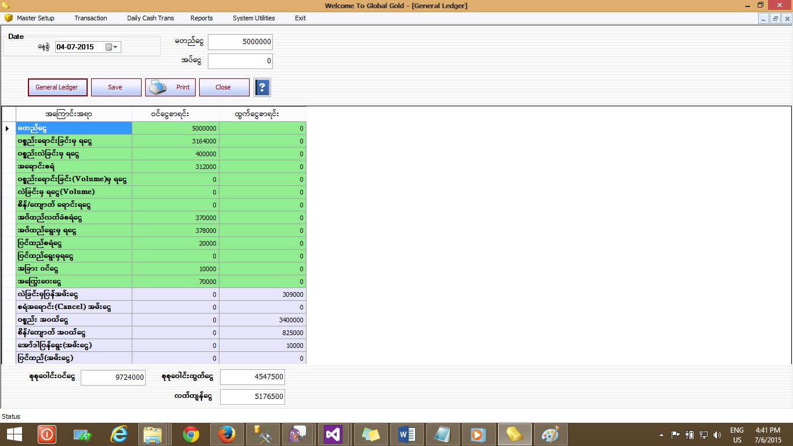

General Ledger

- Report အောက်ရှိ General Ledger Form ကို ဖွင့်ပါ။
- General Ledger Form သည် တစ်နေ့စာဝင်ငွေ၊ ထွက်ငွေစာရင်း နှင့်Opening Cash, Saving Cash စသည်တို့ကို တွက်ချက်သိမ်းဆည်းပေးသော Form ဖြစ်သည်။
- ဆိုင်သိမ်းပြီးပါက ဒီနေ့တစ်နေ့စာအတွက် ထုတ်ထားသော ငွေစုစုပေါင်းကို မတည်ငွေတွင်ရိုက်ထည့်ရပါမည်။
- ထို့နောက် General Ledger Button ကိုနှိပ်လိုက်ပါက ဇယားကွက်တစ်ခုကျလာမည်ဖြစ်ပြီး ထိုဇယားကွက်တွင် ၄င်းနေ့၏အရောင်းအဝယ်လုပ်ထားသော ပစ္စည်းများ၏ငွေစာရင်းကို ဖော်ပြပေးနေမည်ဖြစ်သည်။
- ထို့နောက် အစိမ်းရောင်ဖြင့်ဖော်ပြထားသော ဇယားကွက်သည် ဝင်ငွေစာရင်းဖြစ်ပါသည်။ မတည်ငွေတန်ဖိုးကို Opening Cash အနေဖြင့် ဝင်ငွေစာရင်းအကွက်တွင် တွေ့မြင်ရပါမည်။
- ကျန်ခဲရောင်ဇယားကွက်များသည် ထွက်ငွေစာရင်းဖြစ်သည်။
- ထို့နောက် ဝင်ငွေ၊ ထွက်ငွေပေါ်မူတည်ပြီး အောက်ဆုံးတွင်လက်ကျန်ငွေကို တွေ့မြင်ရပါမည်။
- ထိုလက်ကျန်ငွေ ထဲမှ ကိုယ်သိမ်းဆည်းမည့်ငွေပမာဏကို အပ်ငွေဘေးရှိ text box တွင် ရိုက်ထည့်ပါ။ ပြီးနောက် General Ledger Button ကိုပြန်နှိပ်ပါ။
- ထိုအခါ ခဲရောင် ဇယားကွက်၏အောက်ဆုံးရှိ Saving Cash တွင် ထိုအပ်ငွေကို တွေ့မြင်ရပါမည်။
- ထို့နောက် Save button ကို နှိပ်ပြီး တစ်နေ့တာ ငွေစာရင်းရှင်းတမ်း ကို သိမ်းဆည်းထားနိုင်ပါသည်။
- ထို့နောက် Print button ကိုနှိပ်ပြီး ထုတ်နိုင်ပါသည်။ Print button ကိုနှိပ်ပြီး စာရွက်ထုတ်ချင်ပါက သိမ်းဆည်းပြီးသား တစ်နေ့တာ ငွေစာရင်းရှင်းတမ်း ဖြစ်မှသာ ထွက်လာပါမည်။ Save button မနှိပ်ရသေးပါက စာရွက်ထွက်လာမည် မဟုတ်ပါ။
- ထို General Ledger form သည် တစ်နေ့တာ မတည်ငွေကို user က ရိုက်ထည့်လိုက်ပါက Software တွင် ထိုတစ်နေ့စာ၏ အရောင်းအဝယ်၊ အသုံးစရိတ်၊ ဝင်ငွေ စာရင်းများပေါ်မူတည်ပြီး လက်ကျန်ငွေကို ပြပေးခြင်းဖြစ်ပါသည်။
- Software တွင် ထည့်သွင်းခြင်းမရှိသော ငွေစာရင်းများ ပါဝင်နေလျှင် စာရင်းကိုက်ညီမည်မဟုတ်ပါ။